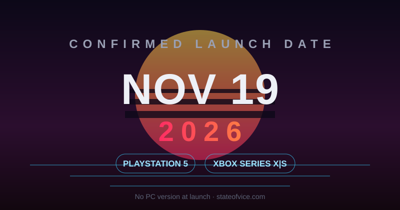

GTA 6 Release Date, Platforms & the PC Question — What's Actually Confirmed

The short answer
After two delays — first from Fall 2025 to May 26, 2026, then to its current date — GTA 6 arrives November 19, 2026, on current-gen consoles only. No PC version at launch. No PS4 or Xbox One version, ever.
Could it be delayed a third time?
Never say never with Rockstar, but this date is about as locked as a release date gets. Take-Two has built its entire fiscal-year 2027 guidance — a record $8 to $8.2 billion in projected net bookings — around a November launch, and Zelnick has publicly reaffirmed the date as recently as late May 2026. Companies don't anchor billions of dollars of guidance to a date they privately doubt.
Rockstar's own explanation for the second delay was wanting extra time to deliver "the level of polish" players expect. The marketing machine — and pre-orders — are expected to spin up around the start of summer 2026, which is another sign the date is real: you don't start the campaign for a game you plan to move.
Is GTA 6 coming to PC?
This is the question PC players keep asking, so let's be precise about what's known and what isn't.
- Confirmed: GTA 6 will not be on PC on November 19, 2026. Rockstar has only announced PS5 and Xbox Series X|S versions.
- Not announced: any PC version, launch window, or system requirements. Anything you see claiming "official GTA 6 PC specs" is made up.
Which consoles can actually run it?
| Platform | Status |
|---|---|
| PlayStation 5 / PS5 Pro | ✅ Confirmed at launch |
| Xbox Series X / Series S | ✅ Confirmed at launch |
| PC | ⏳ Not announced — expected later, date unknown |
| PS4 / Xbox One | ❌ Not happening |
| Nintendo Switch 2 | ❌ Not announced |
Key dates to watch
- Late June – July 2026: marketing campaign and pre-orders expected to open (see our pre-order and editions guide)
- Summer 2026: Trailer 3 expected (not yet officially announced)
- November 19, 2026: launch on PS5 and Xbox Series X|S
Quick FAQ
What time will GTA 6 unlock?
Not announced. Rockstar typically confirms unlock times close to launch — we'll update this page when it does.
Will GTA 6 be on Game Pass?
There is no indication of that. Take-Two sells its biggest releases at full price; do not expect GTA 6 on any subscription service at launch.
Where is GTA 6 set?
Vice City and the surrounding state of Leonida — Rockstar's take on modern Florida. Full breakdown in our map guide.